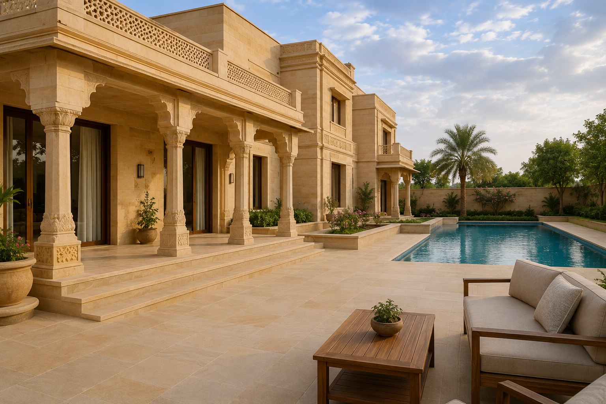
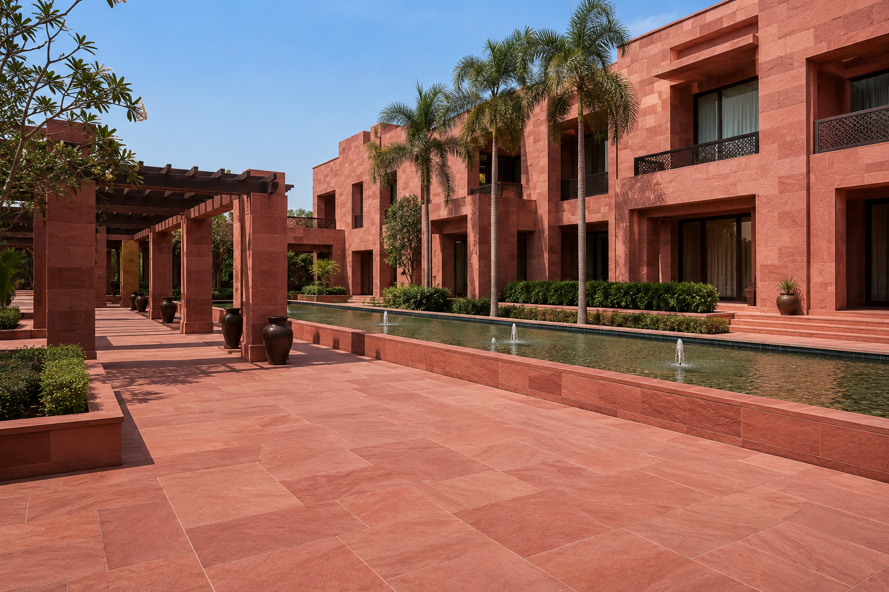
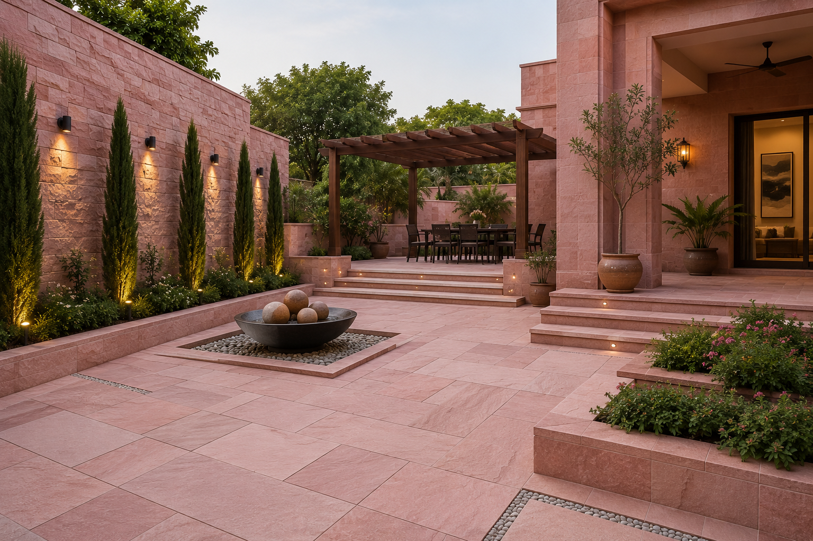

✔ Rajasthan Based Manufacturer
✔ Export Quality Packaging
✔ Custom Sizes Available
✔ Worldwide Shipping
Indian Sandstone for UAE Construction & Landscaping Projects
The United Arab Emirates is one of the most dynamic construction and architectural markets in the world. Luxury villas, hospitality developments, commercial projects and landscape architecture across Dubai, Abu Dhabi, Sharjah and other Emirates continue to create strong demand for premium natural stone materials.
As a trusted sandstone supplier in UAE, ANAY Premium Stone provides premium Indian sandstone solutions for architects, contractors, developers, landscape professionals and stone importers seeking durable and aesthetically refined natural stone products.
Our sandstone collections include Dholpur Beige Sandstone, Dholpur Red Sandstone and Bansi Paharpur Pink Sandstone, available in slabs, tiles, paving, wall cladding, pool coping, steps and custom project specifications.
Indian sandstone remains a preferred material for UAE projects because of its durability, timeless appearance, design versatility and suitability for outdoor environments. From luxury residential developments to hospitality and commercial projects, sandstone continues to be widely used for paving, facades, courtyards, landscape design and architectural applications.
ANAY Premium Stone supports UAE buyers through reliable manufacturing, quality inspection, export packaging and professional project coordination from Rajasthan, India.
Why UAE Buyers Choose ANAY Premium Stone
Integrated Sandstone Supply Chain
ANAY Premium Stone operates as a Quarry Owner, Manufacturer, Processor, Supplier, Wholesaler and Exporter of premium Rajasthan sandstone.
By controlling sourcing, processing, quality inspection and export logistics, we provide reliable sandstone supply solutions for UAE importers, distributors, contractors, architects and project developers.
- Quarry Owner
- Sandstone Manufacturer
- Stone Processor
- Bulk Supplier
- Wholesaler
- Exporter
Architects, developers, landscape contractors, stone importers and construction companies across the UAE require reliable natural stone suppliers capable of delivering consistent quality and professional project support. ANAY Premium Stone is committed to supplying premium Indian sandstone solutions tailored to the requirements of UAE projects.
As a sandstone manufacturer based in Rajasthan, India, we provide direct access to some of India's most respected sandstone varieties, including Dholpur Beige Sandstone, Dholpur Red Sandstone and Bansi Paharpur Pink Sandstone.
Direct Quarry Sourcing
Our access to premium sandstone sources enables consistent material selection, colour consistency and reliable supply for residential, commercial and landscaping projects.
Quality Inspection & Processing
Every order undergoes careful inspection during production to ensure dimensional accuracy, finish consistency and compliance with project specifications.
Export Packaging for International Projects
Products are packed using export-grade packaging methods designed to minimise damage during transportation, handling and container shipment.
Custom Sizes & Project Solutions
We supply sandstone slabs, tiles, paving, wall cladding, pool coping, kerbstones, steps and customised architectural stone products according to project requirements.
Support for UAE Construction & Landscape Projects
From luxury villas and hospitality developments to commercial projects and public spaces, ANAY Premium Stone supports UAE buyers with premium sandstone solutions designed for durability, beauty and long-term performance.
Dholpur Beige Sandstone Supplier in UAE

Dholpur Beige Sandstone is one of the most popular natural stones used in luxury villas, commercial developments, hospitality projects and landscape architecture across the UAE.
Its warm beige tones, elegant appearance and excellent durability make it a preferred choice for architects and developers seeking premium natural stone solutions for both contemporary and traditional designs.
As a trusted sandstone supplier in UAE, ANAY Premium Stone supplies premium quality Dholpur Beige Sandstone in slabs, tiles, paving stones, wall cladding, pool coping, steps and customised project specifications.
The stone performs exceptionally well in outdoor environments and is widely used for courtyards, pathways, facades, pool surrounds, garden landscaping and luxury residential developments throughout Dubai, Abu Dhabi and other Emirates.
International buyers choose Dholpur Beige Sandstone because of its natural beauty, low maintenance requirements, long-term durability and timeless architectural appeal.
Learn more about our Dholpur Beige Sandstone collection, finishes, specifications and export options.
Dholpur Red Sandstone Supplier in UAE

Dholpur Red Sandstone is recognised for its rich natural red colour, architectural character and exceptional durability. It is widely used in luxury villas, hospitality developments, landscape projects and commercial architecture across the UAE.
The stone's distinctive appearance creates a strong visual impact while maintaining the durability required for outdoor and high-traffic environments.
As a premium sandstone supplier in UAE, ANAY Premium Stone supplies Dholpur Red Sandstone in paving, wall cladding, steps, coping stones, slabs and customised project dimensions.
The material is particularly suitable for courtyards, pathways, feature walls, villa entrances, landscape architecture and commercial developments seeking a timeless natural stone appearance.
Its strength, weather resistance and low maintenance requirements make Dholpur Red Sandstone a preferred choice for architects and developers throughout Dubai, Abu Dhabi and the wider UAE market.
Explore our Dholpur Red Sandstone specifications, finishes and project applications.
Bansi Paharpur Pink Sandstone Supplier in UAE

Bansi Paharpur Pink Sandstone is one of India's most prestigious natural stones and is admired worldwide for its elegant pink colour, refined texture and long-term durability.
Architects and developers specify Bansi Paharpur Pink Sandstone for luxury villas, hospitality projects, public spaces and premium landscape developments where aesthetics and durability are equally important.
ANAY Premium Stone supplies Bansi Paharpur Pink Sandstone in slabs, paving stones, tiles, wall cladding, coping stones and customised project specifications for UAE buyers.
Its timeless appearance complements both contemporary and classical architecture, making it a popular material for high-end developments across Dubai, Abu Dhabi and other Emirates.
The stone offers excellent weather resistance, strength and architectural appeal, making it suitable for both interior and exterior applications.
Learn more about our Bansi Paharpur Pink Sandstone collection and export solutions.
Applications of Indian Sandstone in UAE Projects
Indian sandstone is widely used across residential, commercial and hospitality developments throughout the UAE. Its durability, natural appearance and versatility make it suitable for a wide range of architectural and landscape applications.
Luxury Villas
Premium sandstone is frequently used for villa facades, entrances, courtyards, garden pathways, pool surrounds and outdoor living spaces. Dholpur Beige Sandstone is particularly popular for luxury villa projects because of its elegant appearance and timeless appeal.
Hotels & Resorts
Hospitality developments require materials that combine aesthetics with long-term durability. Indian sandstone provides a sophisticated natural finish suitable for resort landscapes, walkways, courtyards and architectural features.
Landscape Architecture
Landscape designers across Dubai and Abu Dhabi utilise sandstone for pathways, paving, seating areas, retaining features and outdoor environments where natural materials enhance the overall project design.
Pool Decks & Outdoor Living Spaces
Sandstone remains a preferred choice for pool surrounds and outdoor recreational areas because of its natural appearance, durability and ability to complement luxury residential architecture.
Commercial Developments
Commercial buildings, mixed-use developments and public projects often incorporate sandstone in facades, paving and landscape features to create attractive and long-lasting architectural environments.
Export Process for UAE Buyers
ANAY Premium Stone follows a structured process to ensure quality, consistency and reliable delivery for UAE projects.
- Selection of premium sandstone from Rajasthan.
- Precision cutting and processing according to project requirements.
- Quality inspection during production.
- Final dimensional and visual inspection.
- Export-grade packaging and pallet preparation.
- Container loading and shipment coordination.
- Documentation support for international buyers.
- Delivery support for UAE importers, contractors and project developers.
This process helps ensure that sandstone products arrive ready for installation while maintaining the quality standards expected by professional buyers.
From Rajasthan Quarries to UAE Projects
ANAY Premium Stone manages the sandstone supply process from source selection through manufacturing and export preparation. Our focus on quality control and project support helps ensure reliable sandstone supply for architects, contractors, developers and importers across the UAE.
Our operations include sandstone sourcing, production, inspection, packaging and shipment coordination to support residential, commercial and landscaping projects.
Through careful material selection and professional manufacturing processes, we supply Dholpur Beige Sandstone, Dholpur Red Sandstone and Bansi Paharpur Pink Sandstone for a wide range of architectural applications.
Manufacturing & Export Infrastructure

ANAY Premium Stone works with premium sandstone sources in Rajasthan, India's leading natural stone region. Access to quality raw materials supports consistent colour selection, reliable availability and professional supply for international projects.

Our manufacturing process includes cutting, processing and inspection to meet project-specific requirements. We support architects, contractors and importers with sandstone products prepared according to project specifications.

Export-grade packaging is used to help protect sandstone during handling, transportation and international shipment. This supports safe delivery for commercial, residential and landscaping projects across the UAE.
Why Import Sandstone from India to UAE?
India is one of the world's leading natural stone producers and is recognised internationally for its premium sandstone varieties. UAE buyers benefit from access to a wide range of colours, finishes and architectural stone solutions suitable for residential, commercial and landscape projects.
Indian sandstone combines durability, aesthetic appeal and long-term value, making it a preferred material for luxury villas, hospitality developments, commercial projects and public spaces throughout the UAE.
ANAY Premium Stone supports UAE buyers with Dholpur Beige Sandstone, Dholpur Red Sandstone and Bansi Paharpur Pink Sandstone supplied directly from Rajasthan, India.
Sandstone Supply Across UAE
ANAY Premium Stone supports sandstone requirements for projects across the United Arab Emirates including Dubai, Abu Dhabi, Sharjah, Ajman, Ras Al Khaimah, Fujairah and Umm Al Quwain.
Whether the requirement involves luxury villas, landscape developments, hospitality projects, commercial architecture or public infrastructure, our sandstone collections are suitable for a wide range of applications.
We support sandstone requirements in Dubai, Abu Dhabi, Sharjah, Ajman, Ras Al Khaimah, Fujairah and Umm Al Quwain through direct manufacturing and export coordination from Rajasthan, India.
- Sandstone Supplier Dubai
- Sandstone Supplier Abu Dhabi
- Sandstone Supplier Sharjah
- Sandstone Supplier Ajman
- Sandstone Supplier Ras Al Khaimah
- Sandstone Supplier Fujairah
Frequently Asked Questions – Sandstone Supplier UAE
Who is a trusted sandstone supplier in UAE?
ANAY Premium Stone supplies premium Indian sandstone including Dholpur Beige Sandstone, Dholpur Red Sandstone and Bansi Paharpur Pink Sandstone for residential, commercial and landscaping projects across the UAE.
Do you export sandstone to Dubai and Abu Dhabi?
Yes. We support architects, contractors, developers and importers throughout Dubai, Abu Dhabi, Sharjah and other Emirates.
Can I import sandstone directly from India to UAE?
Yes. ANAY Premium Stone supplies sandstone directly from Rajasthan, India to buyers across UAE with export packaging, documentation support and shipment coordination.
Which sandstone is best for luxury villas in UAE?
Dholpur Beige Sandstone is one of the most popular choices because of its elegant appearance, durability and suitability for outdoor architectural applications.
Can sandstone be used for UAE climate conditions?
Yes. Premium Indian sandstone is widely used in hot climate regions and is suitable for paving, facades, pool surrounds, landscaping and outdoor spaces.
What sandstone products do you supply?
We supply slabs, tiles, paving stones, wall cladding, coping stones, steps, kerbstones and customised project specifications.
Do you provide custom sizes?
Yes. Products can be manufactured according to project dimensions and architectural requirements.
What is Dholpur Beige Sandstone used for?
Dholpur Beige Sandstone is commonly used for luxury villas, hospitality projects, landscape developments, paving and wall cladding.
What is Dholpur Red Sandstone used for?
Dholpur Red Sandstone is used for pathways, facades, feature walls, landscaping and architectural projects requiring a strong natural appearance.
Why choose Bansi Paharpur Pink Sandstone?
Bansi Paharpur Pink Sandstone is valued for its elegant colour, durability and suitability for premium architectural applications.
How can I request a quotation?
Contact ANAY Premium Stone with project details, quantities and specifications. Our team will review your requirements and provide suitable recommendations and pricing.
Explore More Sandstone Solutions
Explore Our Premium Sandstone Collections
International Sandstone Supply Solutions
Explore our dedicated country-specific sandstone supply pages designed for architects, importers, contractors and project developers across major international markets.
About ANAY Premium Stone
ANAY Premium Stone is a sandstone manufacturer and exporter based in Rajasthan, India. We specialize in supplying premium Indian sandstone products including Dholpur Beige Sandstone, Dholpur Red Sandstone and Bansi Paharpur Pink Sandstone for architectural, landscaping and construction projects.
Our sandstone products are supplied to architects, contractors, developers, landscape professionals, importers and distributors seeking durable and aesthetically refined natural stone solutions.
The company supports international projects through manufacturing, quality inspection, export packaging and professional supply coordination from India.
ANAY Premium Stone serves buyers across the UAE, including Dubai, Abu Dhabi, Sharjah and other Emirates, with sandstone products suitable for luxury villas, hospitality developments, commercial projects and landscape architecture.
Sandstone Applications Across Dubai & Abu Dhabi
Sandstone continues to be one of the most preferred natural materials for premium developments across Dubai and Abu Dhabi. Its timeless appearance, durability and versatility make it suitable for luxury residential and commercial projects.
- Luxury Villa Facades
- Pool Decks & Outdoor Living Areas
- Landscape Architecture
- Hospitality Developments
- Courtyards & Pathways
- Commercial Architecture
- Public Realm Projects
- Outdoor Paving
Why UAE Architects Choose Indian Sandstone
Architects across Dubai, Abu Dhabi and other Emirates continue to specify Indian sandstone because of its natural appearance, durability and versatility. The material complements both contemporary and traditional architecture while providing long-term performance in demanding outdoor environments.
Dholpur Beige Sandstone, Dholpur Red Sandstone and Bansi Paharpur Pink Sandstone are widely suited for luxury villas, hospitality developments, landscape architecture and commercial projects requiring premium natural materials.
Request a Quote for UAE Sandstone Projects
Looking for a reliable sandstone supplier for projects in UAE? ANAY Premium Stone supplies premium Indian sandstone for luxury villas, commercial developments, hospitality projects and landscape architecture across Dubai, Abu Dhabi and the UAE.
Contact our export team for pricing, technical specifications,
samples and container shipment details.
Request a Quote
About ANAY Premium Stone
ANAY Premium Stone is a premium sandstone manufacturer
and exporter based in Rajasthan, India.
We specialize in Dholpur Beige Sandstone,
Dholpur Red Sandstone and Bansi Paharpur Pink Sandstone
for architectural, landscaping and commercial projects worldwide.
- Location: Rajasthan, India
- Phone: +91 77328 65515
- Email: info@anaypremiumstone.com
- Alternate Email: anaypremiumstone@gmail.com
- Industry: Natural Stone Manufacturing
- Export Markets: UAE, USA, UK, Europe, Australia
- Products: Sandstone Slabs, Tiles, Paving, Wall Cladding, Steps & Risers